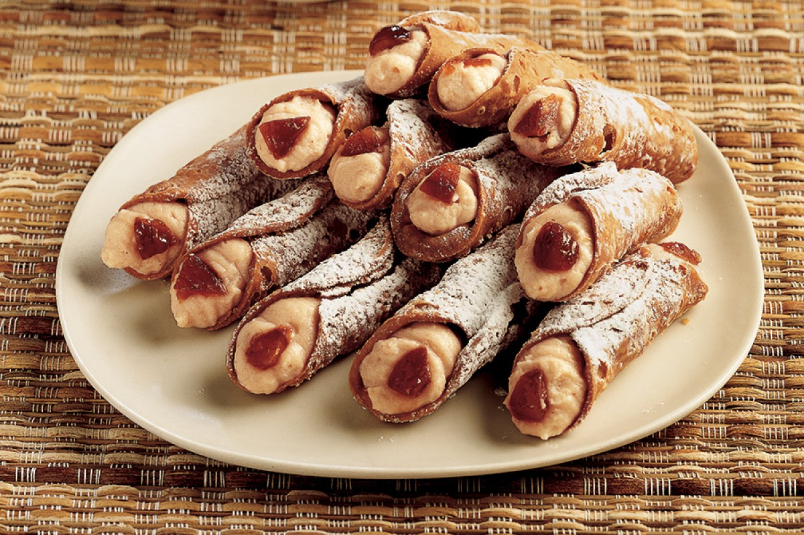
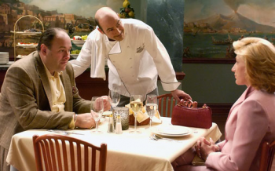

Cannoli

Place the ricotta in a bowl and add the package of chestnuts, 2 tablespoons whipped cream and 1/2 cup of Maraschino
liqueur....
Ingredients
Serves 4 people
- ricotta cheese
- 12 pieces of cannoli shells
- whipped cream
- powdered sugar
- 5 oz of package of chestnuts
- 4 pieces of chestnuts in syrup
- Maraschino liqueur
Steps
- Place the ricotta in a bowl and add the package of chestnuts, 2 tablespoons whipped cream and 1/2 cup of Maraschino
liqueur.
- Carefully mix the ingredients together to form a uniform filling. Fill a pastry bag with this mixture and pipe it
into 12 cannoli shells.
- Cut the chestnuts into pieces and use them to garnish the two ends of each of the cannoli. Place the pastries on
individual dessert plates or on a serving tray, sprinkle them with powdered sugar and serve.
- Turn on the griddle, plancha or grill (or use a simple non-stick frying pan) and cook the involtini by
turning them on both sides. You will need to obtain a lovely tasty crust.
